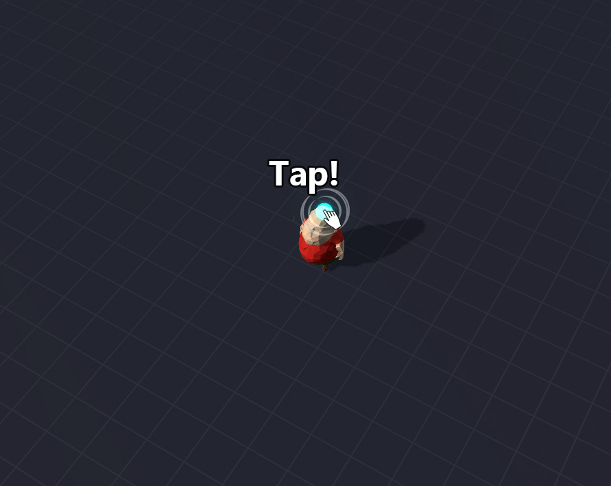

Who we are:
We are a small development team trying to make BIG games. Our development strategy is to build high-class assets that will accelerate the development of our games and yours!
Our Touch-Handler asset gives you easy access to touchscreen actions and gestures.
Actions/Gestures include:
- tap
- swipe
- two-finger swipe
- pinch
- rotate
- long-press
- NEW! Draw To Select
- 
-

Tap!
Swipe!
2-Finger Swipe!
Pinch!
Rotate!
Long-Press!
Draw To Select!